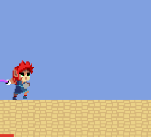
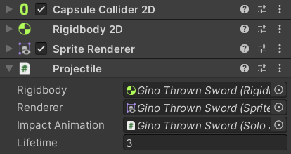
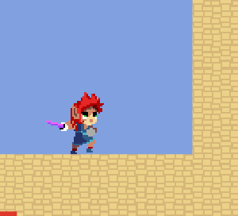

Ranged attacks involve a character playing an animation during which a Projectile is fired. The action itself is implemented by the ProjectileAttackTransition class which inherits from Animancer's regular ClipTransition. This allows it to be selected as the animation on a Basic Action State.
Fields
The fields have tooltips to explain what they do:
[Serializable]
public partial class ProjectileAttackTransition : ClipTransition
{
[SerializeField]
[Tooltip("The prefab that will be instantiated to create the projectile")]
private Projectile _ProjectilePrefab;
public ref Projectile ProjectilePrefab => ref _ProjectilePrefab;
[SerializeField]
[Tooltip("The local position where the projectile will be created")]
private Vector2 _LaunchPoint;
public ref Vector2 LaunchPoint => ref _LaunchPoint;
[SerializeField, MetersPerSecond]
[Tooltip("The initial speed the projectile will be given")]
private float _LaunchSpeed;
public ref float LaunchSpeed => ref _LaunchSpeed;
[SerializeField]
[Tooltip("The amount of damage the projectile will deal")]
private int _Damage;
public ref int Damage => ref _Damage;
Fire
Rather than launching the projectile at the very start or end of the animation, it uses an Animancer Event to tell it when to fire. It uses an Event Names attribute so that the correct name can be selected from a dropdown menu in the Inspector instead of needing to be typed manually:
[Serializable]
[EventNames(EventName)]
public partial class ProjectileAttackTransition : ClipTransition, ISerializationCallbackReceiver
{
public const string EventName = "Fire";
...
Then it uses ISerializationCallbackReceiver.OnAfterDeserialize to find the event with that name and assign the Fire method as its callback:
void ISerializationCallbackReceiver.OnBeforeSerialize() { }
void ISerializationCallbackReceiver.OnAfterDeserialize()
{
#if ! UNITY_EDITOR
// Animancer Events are Pro-Only so they don't work in Animancer Lite at runtime.
if (!AnimancerUtilities.IsAnimancerPro)
return;
#endif
if (_ProjectilePrefab != null)
{
Events.SetCallback(EventName, Fire);
}
}
When the Fire event occurs, it gets the character that triggered the event:
private void Fire()
{
var attacker = CharacterAnimancerComponent.GetCurrent();
Then calculates the position and rotation to launch with:
var facing = attacker.Facing;
var facingLeft = attacker.FacingLeft;
var position = CalculateLaunchPosition(attacker.Character.Body.Position, facingLeft);
var angle = Mathf.Atan2(facing.y, facing.x) * Mathf.Rad2Deg;
if (facingLeft)
angle -= 180;
var rotation = Quaternion.Euler(0, 0, angle);
Then instantiates the _ProjectilePrefab and fires it:
var projectile = Object.Instantiate(_ProjectilePrefab, position, rotation);
projectile.Fire(facing * _LaunchSpeed, attacker.Character.Health.Team, _Damage, null);
projectile.Renderer.flipX = facingLeft;
}
private Vector2 CalculateLaunchPosition(Vector2 position, bool flipX)
{
var launchPosition = _LaunchPoint;
if (flipX)
launchPosition.x = -launchPosition.x;
return position + launchPosition;
}
}
Projectiles
The Projectile component manages the launching and impact of projectiles.

It has several Serialized Fields:
- A
Rigidbody2Dto set the velocity when launched. - A
SpriteRendererwhich isn't used in this class, but theProjectileAttackTransitioncan use it to set whether or not the sprite is flipped horizontally. - A
SoloAnimationcomponent which starts disabled and is used to play an Impact Animation when the projectile hits something. - A maximum
Lifetimeto limit the projectile's range.
public sealed class Projectile : MonoBehaviour
{
[SerializeField]
private Rigidbody2D _Rigidbody;
public Rigidbody2D Rigidbody => _Rigidbody;
[SerializeField]
private SpriteRenderer _Renderer;
public SpriteRenderer Renderer => _Renderer;
[SerializeField]
private SoloAnimation _ImpactAnimation;
public SoloAnimation ImpactAnimation => _ImpactAnimation;
[SerializeField, Seconds]
private float _Lifetime = 3;
public float Lifetime => _Lifetime;
The OnValidate method automatically searches for any missing references:
#if UNITY_EDITOR
private void OnValidate()
{
gameObject.GetComponentInParentOrChildren(ref _Rigidbody);
gameObject.GetComponentInParentOrChildren(ref _Renderer);
gameObject.GetComponentInParentOrChildren(ref _ImpactAnimation);
Since the Projectile wants OnTriggerEnter2D messages, it also makes sure that its collider is set as a trigger. Since it is modifying another component, it specifically checks that value actually needs to be changed to avoid constantly flagging the other object as modified.
if (TryGetComponent<Collider2D>(out var collider) &&
!collider.isTrigger)
collider.isTrigger = true;
}
#endif
When launched, it sets the velocity, stores the details of the attack, and resisters the object to be destroyed if its Lifetime expires:
public Team Team { get; set; }
public int Damage { get; set; }
public HashSet<Hit.ITarget> Ignore { get; set; }
public void Fire(Vector2 velocity, Team team, int damage, HashSet<Hit.ITarget> ignore)
{
_Rigidbody.velocity = velocity;
Team = team;
Damage = damage;
Ignore = ignore;
Destroy(gameObject, _Lifetime);
}
When the projectile's trigger touches something:
- If the object doesn't have any component that implements the
Hit.ITargetinterface, the method continues to destroy the projectile. This happens when the projectile touches a wall. - Otherwise the projectile tries to hit the target:
- If it fails to hit, the method returns immediately so it can continue onwards and try to hit other things. This happens when the projectile passes through an ally (or it would if the Player had any allies).
- If it hits the target successfully, the method continues to destroy the projectile. This happend when the projectile touches an enemy.
private void OnTriggerEnter2D(Collider2D collider)
{
var target = Hit.GetTarget(collider);
if (target != null)
{
var hit = new Hit(transform, Team, Damage, Ignore);
if (!hit.TryHit(target))
return;
}
Now that the projectile has touched something it can't pass through:
- If there is no
_ImpactAnimation, it is destroyed immediately. - Otherwise, its physics is disabled, that animation is played, and the projectile is registered to be destroyed when the animation finishes.
if (_ImpactAnimation == null)
{
Destroy(gameObject);
}
else
{
_Rigidbody.simulated = false;
_ImpactAnimation.enabled = true;
Destroy(gameObject, _ImpactAnimation.Clip.length / _ImpactAnimation.Speed);
}
}
If the collider has a target but it didn't accept the hit, this projectile passes through them.
When this component is destroyed or disabled, it releases the set of objects it can't hit back to the ObjectPool:
private void OnDisable()
{
if (Ignore != null)
ObjectPool.Release(Ignore);
}
}
Impact Animation

The Player's thrown sword has a simple animation which it plays using Animancer's SoloAnimation component when it hits something.